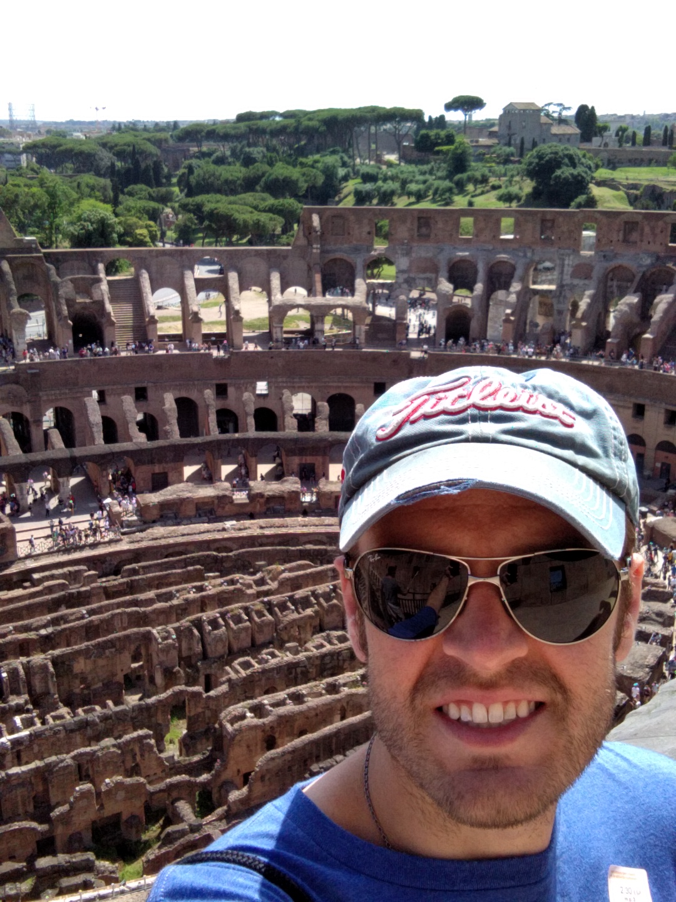

About Me
Hi everybody! I grew up just outside of Chicago and became involved with a wide variety of activities when I was young. I played numerous sports and was always very interested in people and the way the world works. During my high school years, I excelled in academics and on the golf course. I also got my first taste of computer coding when I elected to take a Visual Basic class and later a Cisco computer networking class. While I did not develop an immediate passion for the aforementioned classes at the time, I did further my knowlege in this area with a computer science class when attaining my bachelor's degree from the University of Iowa where I foucsed my studies in psychology and business.
I have been in the workforce ever since graduation in a number of different roles and jobs, ranging from Banking to logistics. Currently, I am working for a restaurant group and an event company in management, operations, and sales. I am also an avid investor and trader, particularly interseted in FinTech and AI.
I am extremely excited and blessed to have been given the opportunity at Northwestern University to jump into a new career as a full-stack web developer! I am certainly looking forward to the future with the plethora of new and valuable skills I have learned!